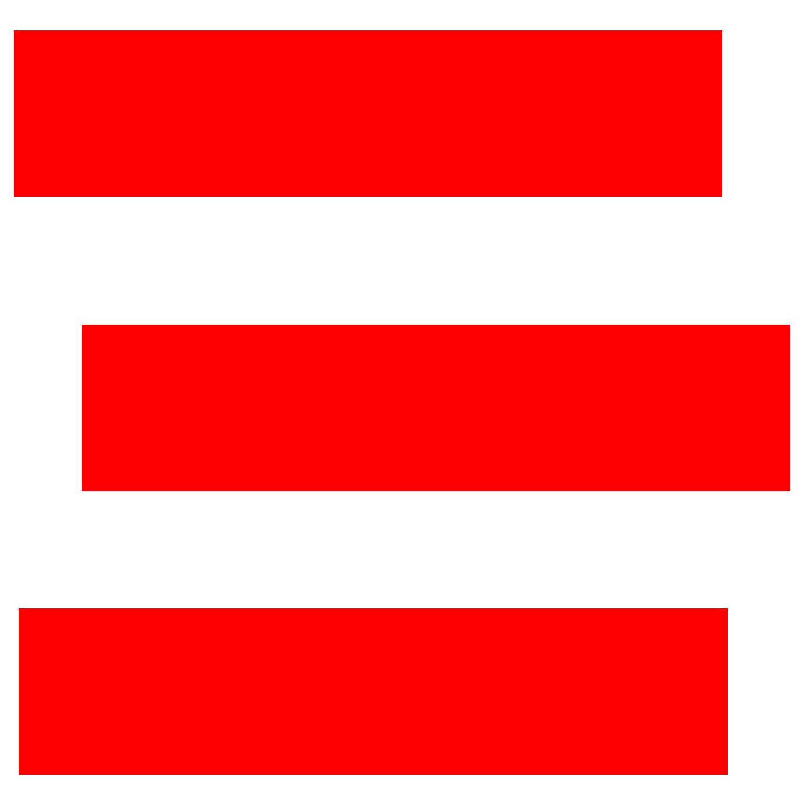
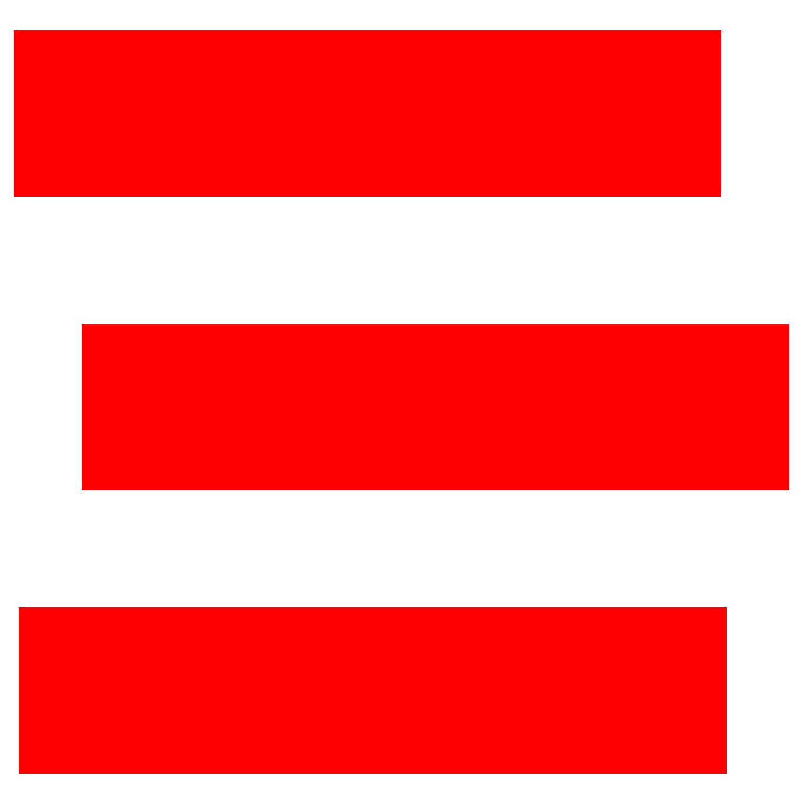
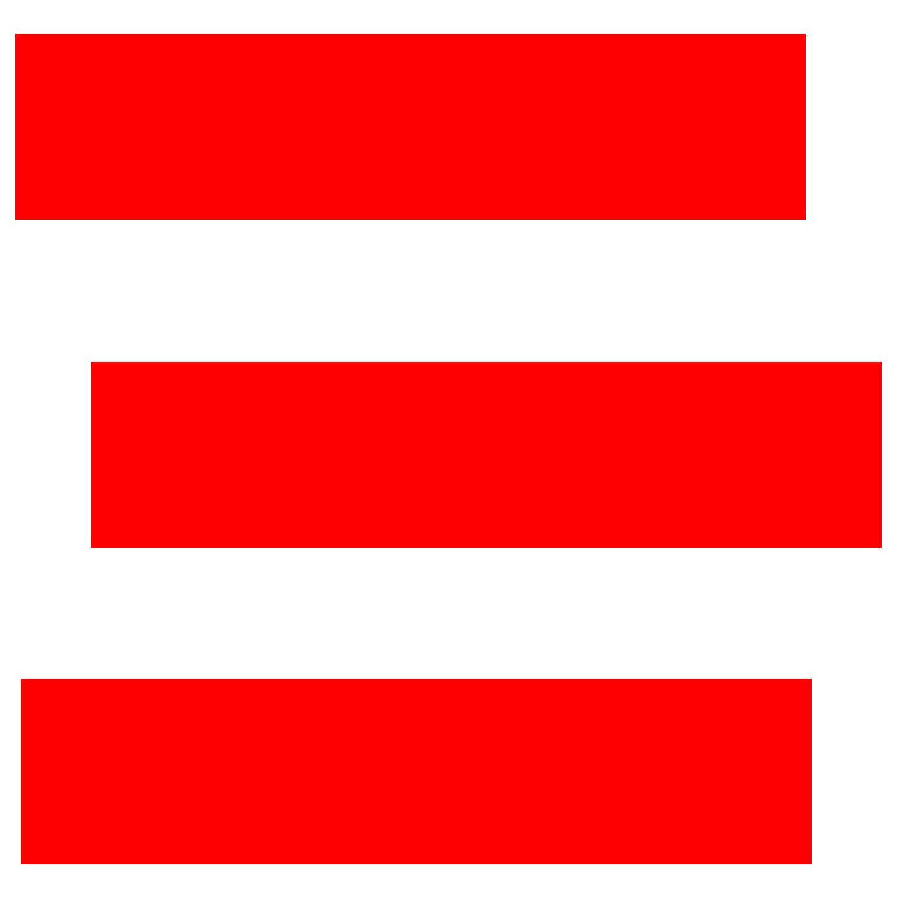
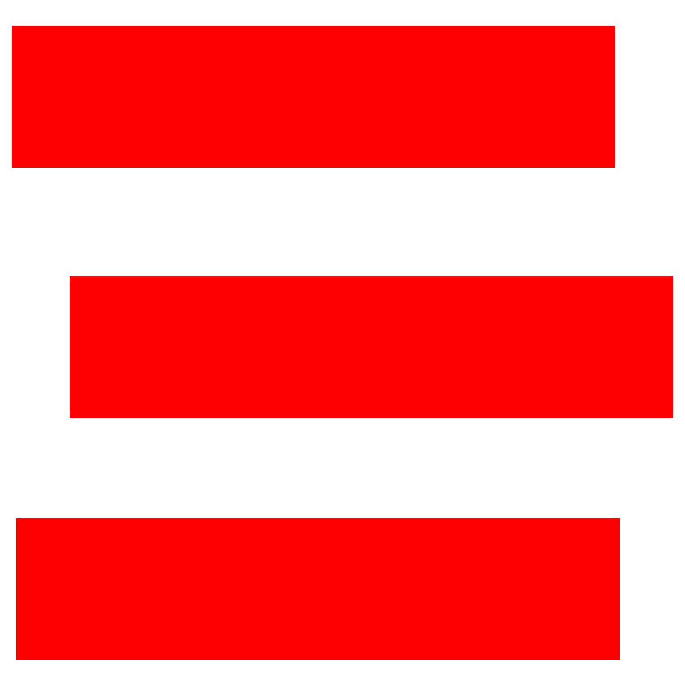

Le niveau 4 de plongée sous-marine (N4) est un niveau permettant d'exercer la fonction de Guide de Palanquée (GP) en exploration. Il s'appelle alors brevet de "Guide de Palanquée-Niveau4" (GPN4). Les prérogatives de ce brevet sont définies par le Code du Sport (établissement organisant la pratique de la plongée subaquatique). Le niveau permet la pratique de la plongée à 60 mètres de profondeur.

La majorité est requise pour avoir ce niveau. Il apparait évident que la possession du niveau 3 est nécessaire pour le passage du niveau 4-Guide de Palanquée. Tout comme le niveau 1, le niveau 2, et le niveau 3 ; la possession d’un certificat médicale datant de moins d'un an et délivré par un médecin fédéral est obligatoire. Le passage du niveau 4-GP s'effectue par une comission technique, un président de jury et un délégué de cette même comission.
Remarque : chaque plongée est réalisées dans le cadre d’une organisation sécurisée, selon les règles définies par le Code du Sport (CdS).


A l’obtention du niveau, le plongeur se voit attribuer une carte CMAS (Confédération Mondiale des Activités Subaquatiques) double face (une face FFESSM et une face CMAS) qui permet la pratique de la plongée à son niveau dans le monde. La carte CMAS du plongeur niveau 4 offre des droits plus importants en dehors des frontières françaises en fonction des législations et prérogatives locales. Après acquisition du niveau, une pratique régulière de la plongée est recommandée. Une fois le diplôme obtenu, le titulaire peut donc être guide de palanquée (GP).
Pour plus d’informations détaillées sur le niveau et ses compétences sur rendre sur le site de la FFESSM ou sur le manuel du niveau 4 de plongeur.
Vidéo de cours pour le niveau 4 :